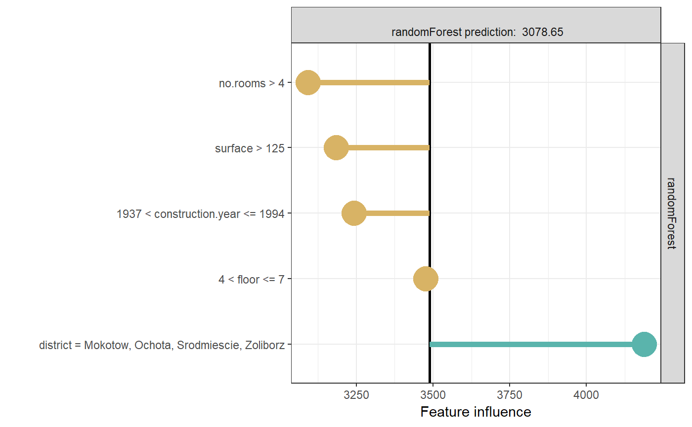

Since only binary features are used, the weight associated with an observation is simply exp(-{number of features that were changed compared to the original observation}). Kernels are meant to be used as an argument to individual_surrogate_model function. Other custom functions can be used. Such functions take two vectors and return a single number.
gaussian_kernel(explained_instance, simulated_instance)
| explained_instance | explained instance |
|---|---|
| simulated_instance | new observation |
numeric
library(DALEX)#> #>library(randomForest)#>#>library(localModel) data('apartments') mrf <- randomForest(m2.price ~., data = apartments, ntree = 50) explainer <- explain(model = mrf, data = apartments[, -1])#> Preparation of a new explainer is initiated #> -> model label : randomForest ( default ) #> -> data : 1000 rows 5 cols #> -> target variable : not specified! ( WARNING ) #> -> predict function : yhat.randomForest will be used ( default ) #> -> predicted values : numerical, min = 1986.342 , mean = 3489.346 , max = 5859.842 #> -> model_info : package randomForest , ver. 4.6.14 , task regression ( default ) #> -> residual function : difference between y and yhat ( default ) #> A new explainer has been created!model_lok <- individual_surrogate_model(explainer, apartments[5, -1], size = 500, seed = 17, kernel = gaussian_kernel) # In this case each simulated observation has weight # that is small when the distance from original observation is large, # so closer observation have more weight. model_lok#> estimated variable original_variable #> 1 3489.3465 (Model mean) #> 2 3269.4817 (Intercept) #> 3 -137.6050 1935 < construction.year <= 1994 construction.year #> 4 -243.1474 surface > 125 surface #> 5 658.1883 district = Mokotow, Ochota, Srodmiescie, Zoliborz district #> dev_ratio response predicted_value model #> 1 0.6223812 3078.649 randomForest #> 2 0.6223812 3078.649 randomForest #> 3 0.6223812 3078.649 randomForest #> 4 0.6223812 3078.649 randomForest #> 5 0.6223812 3078.649 randomForestplot(model_lok)